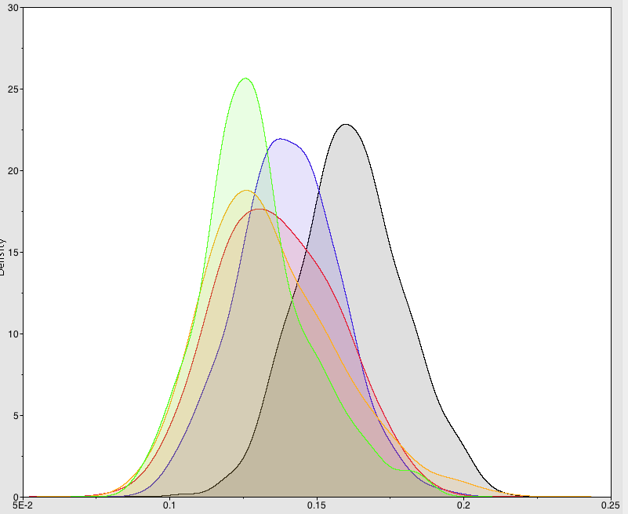
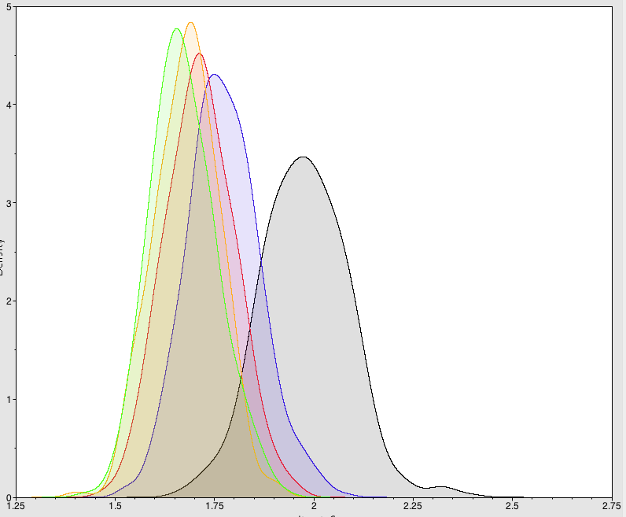
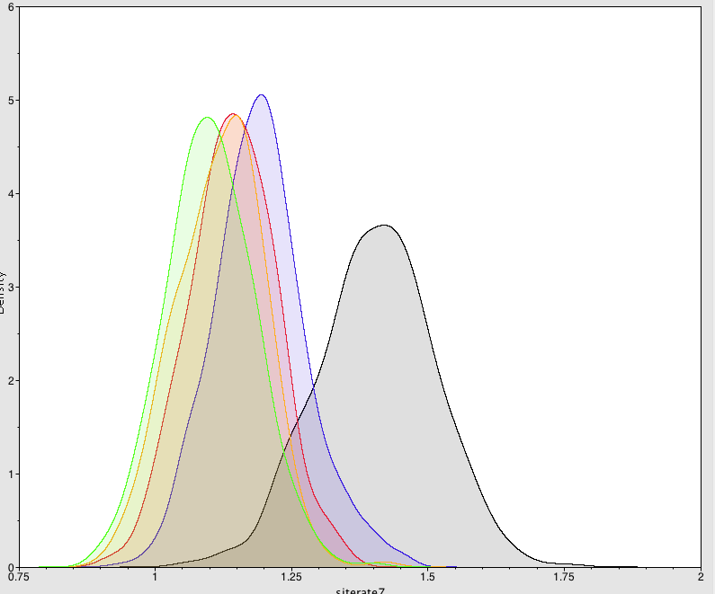
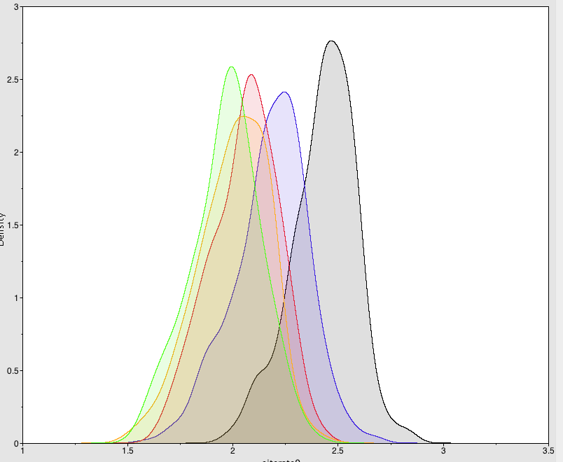
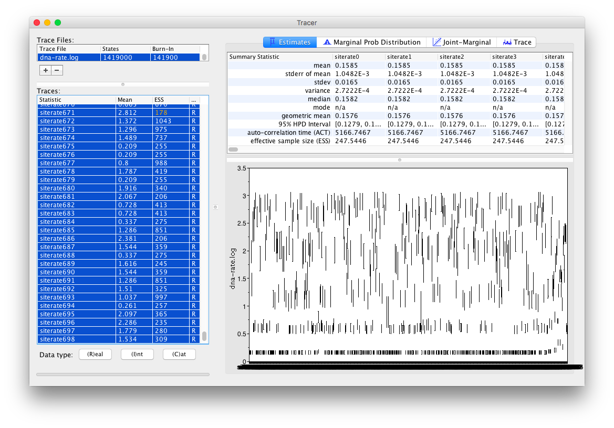

Site rate logger with babel.util.SiteRateLogger
The babel.util.SiteRateLogger logs the rate for each site. It assume that more than
1 site category is used, typically through gamma rate heterogeneity with 4 or so categories.
Let there be $K$ categories, and let the rates be $r_1,\ldots,r_K$ with rate proportions
$w_1,\ldots,w_K$ then for each site $i$ and category $j$ we can calculate the probability
of the data at site $i$ when the tree's branch lengths are weighted with rate $r_i$.
Let $p_{ij}$ be that probability, then the average rate for site $i$ is
$$ R_i =\frac{\int_{r=0}^\infty r_j p(r) p_i(r) dr }{\int_{r=0}^\infty p(r) p_i(r) dr }
\approx\frac{\sum_{j=1}^Kr_j w_j p_{ij}}{\sum_{j=1}^Kw_j p_{ij}} $$
(where $p_i(r)$ is the site probability at rate r, and $p(r)$ the probability of sampling rate $r$).
The approximation is due to discretising the distribution $p(r)$ into $K$ categories.
The intuition is that for each rate there is a certain probability, and more likely categories
(i.e. those with higher $p_{ij}$) indicate that rate is more likely.
Rate proportions are usually equal ($w_i=1/K$) and drop out of the equation above.
This assumes the mean rate is one $\sum_{j=1}^Kr_j w_j = 1$, however, in case this is not
true, we can compensate for that by dividing by the mean rate:
$$ R_i \approx\frac{\sum_{j=1}^Kr_j w_j p_{ij}}{\sum_{j=1}^Kw_j p_{ij} \sum_{j=1}^Kr_j w_j} $$
Higher numbers of categories mean the rate distribution is approximated better and perhaps
lead to more accurate estimates (with 1 category every $R_i$ will be 1, 4 will be better,
but not sure how high to go -- let me know if you have any experience).




Sample of rate estimates with 4 (black), 8 (blue), 16 (red), 32 (yellow) and 64 (green)
rate categories when using gamma rate heterogeneity (shape=0.4).
Before you start
Make sure you have BEAST installed with the
Babel package (see
read me for details).
Usage
If there is only a single partition, there will be a single treelikelihood, and
you can simply add a logger containing just one SiteRateLogger like so:
<logger id="siteratelog" fileName="siterate.log" logEvery="1000">
<log spec="babel.util.SiteRateLogger" likelihood="@treeLikelihood.dna"/>
</logger>
This will create a log file siterate.log and with Tn$ sites, it will contain entries
siterate0,$\ldots$,siterate$(n-1)$.
If you have multiple partitions, say p1, p2, p3, p4, with treelikelihoods
treelikelihoods.p1, treelikelihoods.p2, treelikelihoods.p3, treelikelihoods.p4 you can
use four SiteRateLoggers each referring to a different treelikelihood.
Make sure each SiteRateLogger gets its own unique ID, since that is used in the
log to differentiate between the different loggers.
<logger id="siteratelog" fileName="siterate.log" logEvery="1000">
<log id="siteratep1" spec="babel.util.SiteRateLogger" likelihood="@treeLikelihood.p1"/>
<log id="siteratep2" spec="babel.util.SiteRateLogger" likelihood="@treeLikelihood.p2"/>
<log id="siteratep3" spec="babel.util.SiteRateLogger" likelihood="@treeLikelihood.p3"/>
<log id="siteratep4" spec="babel.util.SiteRateLogger" likelihood="@treeLikelihood.p4"/>
</logger>
To minimise the XML, you can use plates:
<logger id="siteratelog" fileName="dna-rate.log" logEvery="1000">
<plate var="n" range="p1,p2,p3,p4">
<log id="siterate$\$$(n)" spec="babel.util.SiteRateLogger" likelihood="@treeLikelihood.$\$$(n)"/>
</plate>
</logger>
Options
To only log a range of sites, use the "from" and "to" inputs. These are indices of sites,
where the first site is numbered 1. For example, to only log sites 10 to 20 use:
<log spec="babel.util.SiteRateLogger" from="10" to="20" likelihood="@treeLikelihood.dna"/>
Instead of having to match site numbers in the log to actual meaningful site labels, you
can specify the site labels as space delimited list of entries inside the element. For
example, the following will log 5 sites and the trace log contains columns for
cognate_ant_1, cognate_ant_3, cognate_ant4, cognate_water_1 and cognate_water_6:
<log spec="babel.util.SiteRateLogger" from="10" to="20" likelihood="@treeLikelihood.dna">
cognate_ant_1 cognate_ant_3 cognate_ant4 cognate_water_1 cognate_water_6
</log>
Post processing
Just open the log file in tracer, and inspect the sites of interest.
